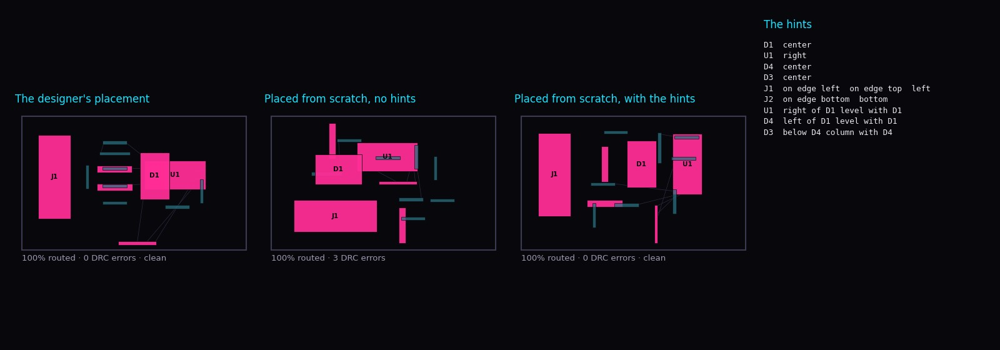

In the last post, designers' placements routed clean and automatic ones mostly did not. The designers were working from the same netlist. What they had that the placers lacked is information the netlist doesn't carry: the USB port goes on this edge, the regulator lives in that corner, this capacitor belongs to that pin. So we built a way to say those things, and measured what it buys.
- A hint is a rough, relative statement in a small text language:
J1 on edge left,U2 right of U1,C1 near U1.7. - On 52 real boards, our placer met 80–85% of the hints it was given, and the big parts landed about twice as close to where the designer had put them.
- The gain in routing was small: boards that route clean went from 15% to 21%. The designers' placements get 63% on the same boards.

01 / The language
The model comes from reladraw, a diagram language where you say where things go without giving coordinates. Positions are relative, a gap is a minimum distance, and statements that cannot all hold are refused. That is how a floorplan is described at a whiteboard, and it is text, so an agent can write it, a person can read it, and it diffs.
group psu: U4 L1 C5 C6 # keep these together
U1 center
J1 on edge left
psu bottom-left
U2 right of U1 level with U1
C1 near U1.7 within: 2 # a pad, edge-to-edge mm
Y1 near U1 weight: 3
J2 rotate 90The PCB dialect adds what a diagram has no use for: board edges, regions of the board, a named pad as a target, a pinned rotation, and real footprint sizes. A statement about a part that does not exist, or one that places a part against itself, is an error with a line number.
02 / How the placer uses it
Hints are soft. Each one becomes a term in the placer's cost: the distance, in millimetres, by which it is not met. The placer weighs that against wirelength, and against hard penalties for parts that overlap or leave the board. When it finishes it lists every hint it could not meet and by how much, so a hint that fights the wiring is visible.
The placer itself had to be rewritten for this. The earlier version annealed positions and then picked rotations in a separate pass, with no step to make the result legal. The new one handles position and rotation in one cost, lets parts pass through each other early and not late, and pushes overlapping bodies apart at the end.
03 / The measurement
Writing hints by hand for 52 boards would test our hint-writing. So the hints are derived from each designer's own placement, at three levels of detail:
- Level 1, anchors: every part that sits against a board edge goes on that edge, and each part with 8 or more pads gets a region such as
top-leftorcenter. - Level 2: adds how the big parts sit relative to each other:
U3 right of U1 level with U1. - Level 3: adds each small part
nearthe big part it sits beside.
Every part is then placed from scratch, routed by TraceMaker with a 20-second budget, and judged by KiCad DRC under the board's own rules. The boards are the 52 from our corpus with up to 150 connections and a placement that is legal as designed.
| Placement | Routes clean | Connections routed | DRC errors before routing | Hints per board (met) | Big parts: distance from the designer's |
|---|---|---|---|---|---|
| Designer's | 0.63 | 95.9% | 0 | – | 0 |
| No hints | 0.15 | 91.5% | 30 | – | 26% of the board diagonal |
| Level 1: anchors | 0.19 | 92.8% | 25 | 12 (85%) | 12% |
| Level 2: + relations | 0.21 | 92.9% | 26 | 16 (80%) | 11% |
| Level 3: + near | 0.19 | 91.5% | 30 | 34 (83%) | 12% |
04 / What it says
Hints do what they say. A dozen statements per board are enough to halve how far the big parts end up from the designer's floorplan, and four in five are met outright. In the board at the top, nine hints reproduce the designer's arrangement: the connector on the left edge, the two chips side by side.
The routing gain is real but small. With level-2 hints, three boards that failed without hints route clean, and none that passed is lost. Counting connections, hints route more on 12 boards and fewer on 8.
More detail did not help. Level 3 gives the placer 34 hints per board and routes no better than no hints at all. Pinning every small part beside its chip leaves the placer less room to sort out the wiring.
The floorplan is not the bottleneck. Legality is. Only about 11 of the 52 placements have zero DRC errors before any routing, with or without hints. The rest average 25 to 30 errors each, mostly pads too close together on boards where the designer packed parts tighter than our box model allows. A router cannot fix a placement that is already illegal. That is where the remaining distance to the designers' 63% is, and it is the next thing to work on.
Shorter wires are not the goal. Without hints, our placer's wiring is 24% shorter than the designer's, and it routes worse. The designer's longer wiring is paying for something: edge constraints, room around dense parts, legal spacing.
05 / A correction to the last post
The last post said our placer got 1 of 10 medium boards clean. That was the earlier placer, and the number stands for it. Building this one turned up a bug that affected later work: the placer was writing copper pours back into its output, and a router that reads the board file treats a stale pour as solid copper in its way. On boards with pours, that made our placements look almost unroutable. The placement-score weights reported in that post's update were fitted partly on those results. We are re-running that study and will correct the post.
06 / Caveats
- The hints are derived from the answer. Hand-written hints will be less accurate, so this is closer to an upper bound for what hints of this kind can do with this placer.
- One placement per board, one router, a 20-second budget, boards of up to 150 connections.
- Bodies are boxes. Footprints with pads around a hollow middle, and boards whose designers overlap courtyards, are modelled badly.
- Facing is not handled yet: a connector hinted onto an edge is not turned to face out.
The language is place_hints.py and the placer is place_kicad.py, both in the pcb-layout skill at punkfab/circuit-skills, with the study and its results under evals/corpus. Thanks to reladraw's author for the model. Have a board that needs placing or routing? Start a project →